Consider the following relation between the common-base current gain,  , and the common-emitter current gain,
, and the common-emitter current gain,  :
:

Consider that  is changed to 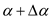, then the corresponding change in
is changed to 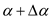, then the corresponding change in  is, 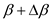. Therefore,
is, 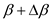. Therefore,
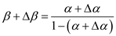
Simplify the expression to find the change in  .
.
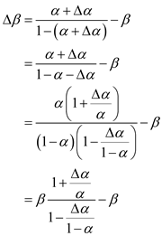
Simplify the expression further.
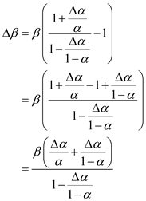
 equals to unity and 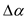 is small:
equals to unity and 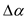 is small: changes by a small per-unit amount, 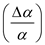, the corresponding per-unit change in 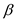 is approximately 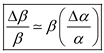.
changes by a small per-unit amount, 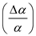, the corresponding per-unit change in 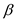 is approximately 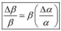.